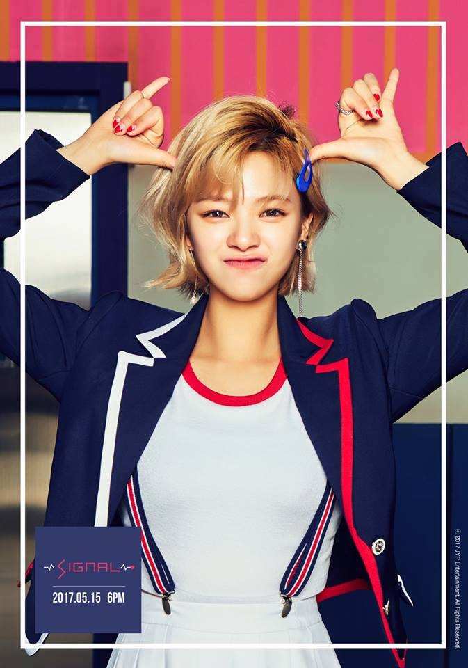

J E O N G Y E O N

Stage Name: Jeongyeon
Birth Name: Yoo Kyung Wan (유경완), but she legalized her name to Yoo Jung Yeon (유정연)
Nationality: Korean
Position: Lead Vocalist
Birthday: November 1, 1996
Zodiac Sign: Scorpio
Official height: 169 cm (5’7″) / Approx. Real Height: 167 cm (5’6″)*
Weight: 50 kg (110 lbs)
Blood Type: O
Jeongyeon facts:
She was born in Suwon, South Korea.
Jeongyeon’s birth name is Yoo Kyung Wan. She changed her name in 3rd grade because
she was teased because her name sounded like a boy’s name.
When Jeongyeon was young, she failed the JYP audition. She became a trainee
after passing the JYP Entertainment’s 6th Open Audition on March 1, 2010.
She is the younger sister of Gong Seungyeon (actress, who appeared in We Got Married).
The leader of Twice was decided by anonymous voting. Jeongyeon was in 2nd place.
She likes Nanoblocks and Legos.
Jeongyeon likes ddeokbokki, meat, and golbangee muchim.
She doesn’t like lotus.
The happiest part of Jeongyeon’s day is taking off her contact lenses.
Jeongyeon is called the mother of TWICE. (Amigo TV)
In the dorm, Jeongyeon and Momo shares a room.
Jeongyeon is ambidextrous. (Twice Showtime)
Jeongyeon is in charge of cleaning the dorm. She likes cleaning.
She appeared in GOT7’s “Girls Girls Girls” MV and miss A’s “Only You” MV.
Jungyeon said that if she were a male, she would date Nayeon, because she’s cute (Busan fansign).
At Incheon fansign she said she would date Mina.
She doesn’t use perfume, she uses body mist instead.
In Twice’s dorm Jungyeon is the one who catches the bugs. (Jihyo is the one who’s the most scared of them)
She has 2 dogs: a white Pomeranian named Bbosongie and a Poodle named Nanan.
She has the most confidence in her legs and teeth.
She initially wanted a modeling career.
Jeongyeon’s father Yoo Chang-joon was a private chef for former president Kim Dae-jung,
as well as a head chef of the Seoul Plaza Hotel for over 20 years, specializing in Korean cuisine.
Her mother works at a Japanese restaurant owned by her maternal aunt.
Jeongyeon stated that she will start to grow out her hair in 2017, which you can actually tell now!
Jeongyeon’s ideal type: “Someone who makes me feel comfortable; Someone funny who can amuse me.”
Learn More